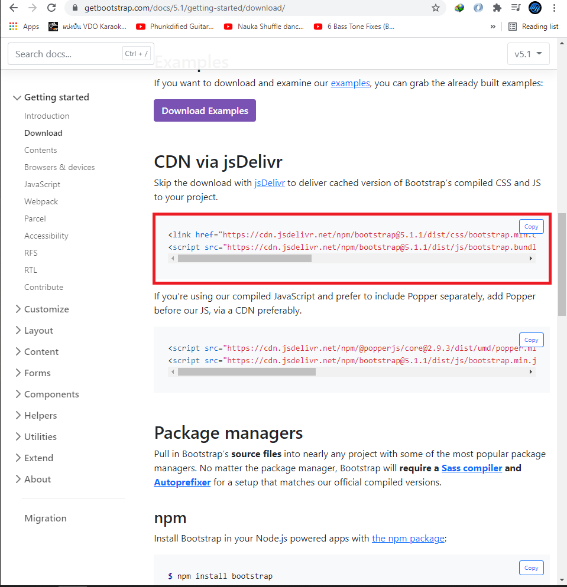
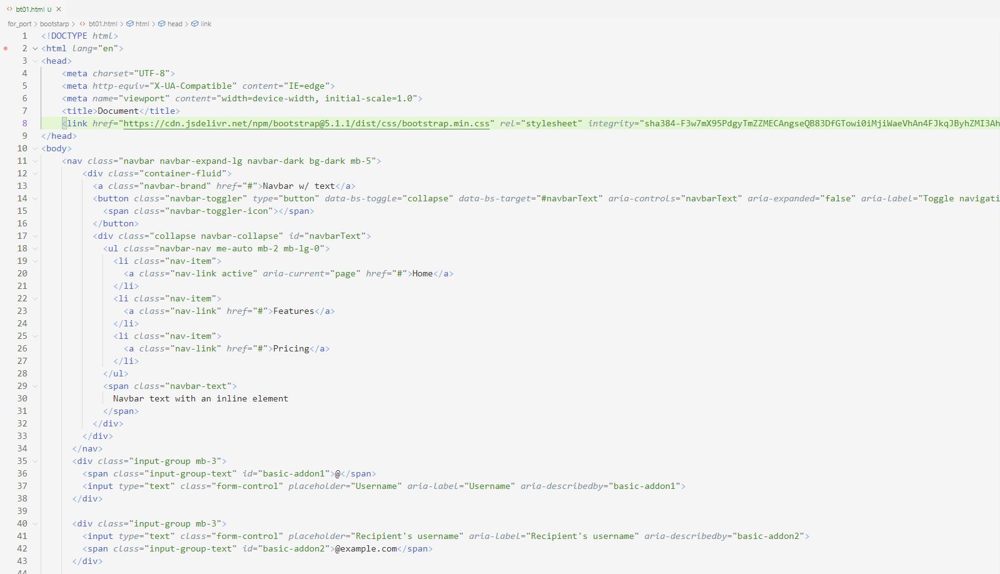
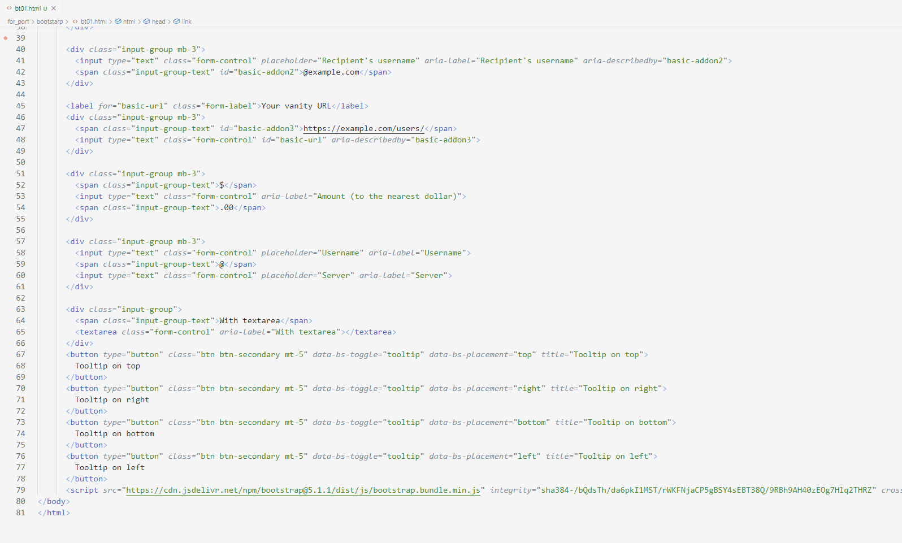
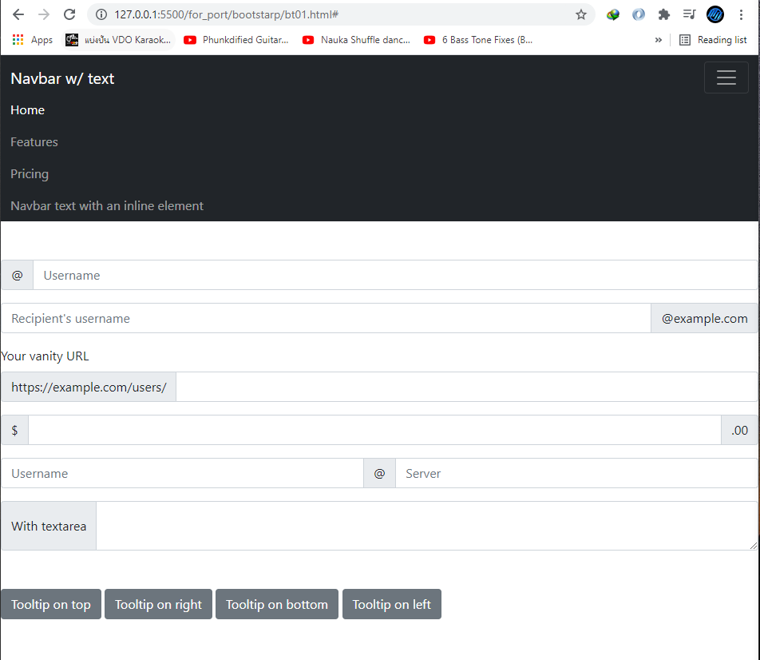

Bootstrap
Bootstrap คือบริการ css และ js ที่จะมาช่วยในเรื่อง front end ของ web site ทำให้ประหยัดเวลาในการทำ front end ไปค่อนข้างมาก นอกจากนี้ยังมี theme หรือ ตัวอย่าง page ให้ โหลดไปใช้ได้ รวมถึง element ต่างๆ แยกไปตามต้องการอีก ในขั้นตอนแรกถ้าเราต้องการจะใช้ bootstrap จะต้องเข้าไปโหลดที่ https://getbootstrap.com/docs/5.1/getting-started/download/ สมรถลงใน project หรือจะใช้เป็น cdn (content delivery network) ก็ได้ในที่นี้จะใช้เป็น cdn



หลังจาก copy link มาวางใน project ที่ต้องการแล้วให้ทดลองใช้ดู ควรวาง link css ไว้ใน head และ script ไว้ล่าง body ถ้าสังเกตดูในโค้ดนั้นไม่มี tag style เลยและไม่มี function ใดเลยแต่ผลลัพฑิ์ที่ได้คือ nav bar,form และ button ที่จัดแต่งแล้วเรียบร้อยดังรูปด้านล่าง

ซึ่งการเขียนหน้า page ในรูปแบบนี้ถ้าเขียนเองจะใช้เวลามากเพราะต้องเขียนทั้ง css และ js แต่การใช้ bootstrap นอกจากจัดแต่งรูปแบบให้แล้วยังทำให้ web site เป็นแบบ responsive อีกด้วย นอกจากนั้นทำให้การเขียนโค้ดสั้นลงมาก และนอกจากตัวอย่างที่ลองสร้างขึ้นมานั้นยังมี อีกหลาย element ให้ลองเลือกใช้อีกมากซึ่งแทบจะได้ web site ในด้าน front end สำเร็จรูปมาเลยทีเดียว